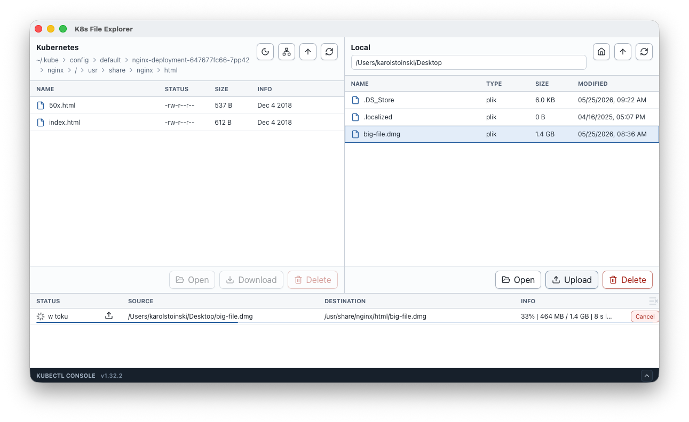

Browse pod files visually
Move from kubeconfig to namespace, pod, container, and path without rebuilding commands by hand.
Desktop explorer for Kubernetes pods
Browse pod files, move artifacts, and open remote files locally without turning every file task into a chain of kubectl commands.
Life is too short to type kubectl cp by hand

Built for daily Kubernetes file work
K8s File Explorer keeps the narrow job fast: find a pod, inspect its filesystem, and move files safely through kubectl.
Move from kubeconfig to namespace, pod, container, and path without rebuilding commands by hand.
The app delegates Kubernetes operations to local kubectl, so it fits existing cluster access rules.
Upload and download work continues in a transfer panel with clear status and cancellation.
Double-click a pod file to download it to a temporary location and open it with your desktop tools.
Workflow
Start from the kubeconfigs already present on the machine.
Load only the Kubernetes fields needed for navigation.
Inspect folders and file metadata through kubectl exec.
Use kubectl cp for transfers and keep progress visible.
Requirements
The desktop app expects the tools and permissions you already use for cluster operations.